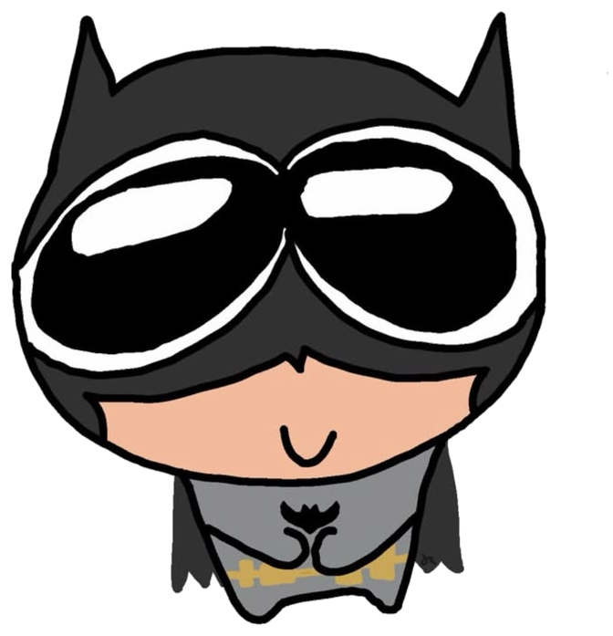
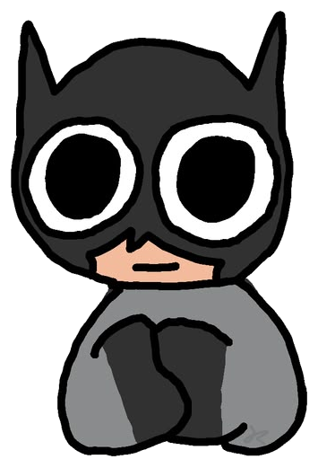

An animated, transparent, always-on-top desktop companion that floats gently on your screen. Nudges you for hydration, eye breaks, and spine stretches—with dual-mode AI chat, draggable summon controls, and daily streak tracking.

Experience how Batman responds with animations, expressions, and dialogues right in your browser.

Zero intrusive popups. Zero subscription fees. Just disciplined health nudges from the Dark Knight.
Frameless, click-through-safe desktop window. Only the cute chibi Batman sprite and speech bubble render on your screen.
A floating 64px avatar pinned to your desktop. Click anytime to summon Batman, or drag it anywhere along your screen edge.
Instant offline regex intelligence with zero API keys required, plus optional encrypted OpenAI mode for customized conversation.
Tracks daily water intake, breaks taken, and consecutive day streaks with automatic midnight reset and all-time logs.
Batman automatically detects which monitor your cursor is actively working on and visits right beside your active window.
Senses system inactivity (>5m away from keyboard) and respects customizable quiet hours so you're never interrupted at night.
No Node.js or setup required. Download the executable, double click, and Batman begins his patrol immediately.
Download Windows ZIP →If you have Node installed, simply double-click run.bat in the repository root. Dependencies auto-install on first run.
run.bat
Developers on Windows, Mac, or Linux can clone and start via npm directly in their terminal of choice.
npm install && npm start
Built on Electron 33 with strict security defaults, Context Isolation, and encrypted local persistence.